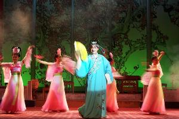

川剧变脸
何谓变脸：变脸是川剧表演的特技之一，用于揭示剧中人物的内心及思想感情的变化，即把不可见、不可感的抽象的情绪和心理状态变成可见、可感的具体形象——脸谱。
 脸谱演变：最初的脸谱是纸壳面具，后经改良，发展为草纸绘制的脸谱，表演时以烟火或折扇掩护，层层揭去脸谱，新中国成立后，随着变脸绝技的飞速发展，制作脸谱的材料也发展成为现在使用的绸缎面料，极大的方便了川剧演员的表演。
脸谱造型：变脸脸谱会选用一些不知名人士，包括侠士、鬼怪之类的造型，而人们所熟知的脸谱，如关公、曹操、包公等人物的脸谱一般不用于变脸。绘制变脸脸谱笔锋要锐利、粗犷，颜色对比要强烈，这样才能形成炫目的礼堂效果，在设色寓意的设计上，要以剧中人物的道德品质和角色种类为依据，或歌颂赞扬、或揭露讽刺、或鞭挞批判，或贬或褒，全都可以从脸谱色彩中反映出来。
手法：抹脸、吹脸、扯脸、运气变脸
抹脸：将化妆油彩涂在脸的某一特定部位上，表演时用手往脸上一抹，即可变成另外一种脸色。如果需摇变整张脸，就把油彩涂在额上或眉毛上，如果只变下半部脸，则将油彩涂在脸上或鼻子上。《白蛇传》中的许仙用的就是“抹脸”。
吹脸：用粉末状的化妆品，如金粉、银粉、墨粉等，装进特定的容器里，表演时，演员只需将脸贴近容器一吹，粉末就会扑在脸上，吹时必须闭眼、闭口、闭气。《活捉子都》中的吹脸，化妆粉末是放在酒杯内的，更多的时候是在舞台的地面上摆一个已经装好粉末的小盒子，演员只需做一个伏地的舞蹈动作，就可以趁机将脸贴近盒子。
扯脸：事前将脸谱画在一张一张剪好的绸子上，然后按顺序贴在脸上，每张脸谱都系有一把丝线，丝线的另一端系在衣服的某一个顺手而又不引人注目的地方（如腰带上），依据剧情的需要，在巧妙利落的舞蹈动作的掩护下，再一张一张地扯下来。《望娘滩》的聂龙、《白蛇传》中的钵童都使用的是“扯脸”。
运气变脸：传说已故川剧演员彭泗洪曾在扮演《空城计》中的诸葛亮时，运用气功而使脸由红变白，再由白转青，表现诸葛亮在得知司马懿大军退去后的心理变化。